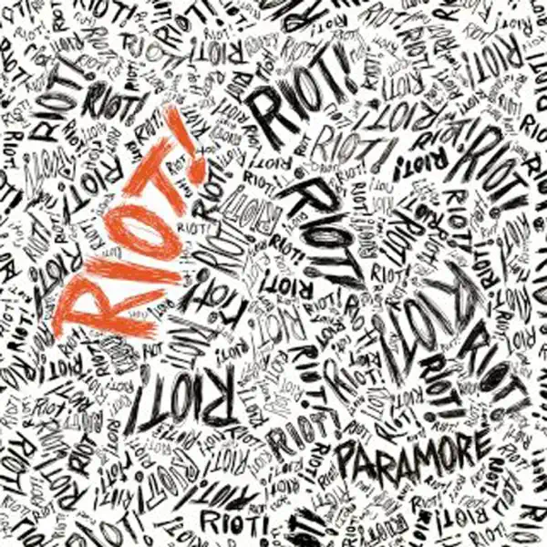

Classic Review
Riot!
Paramore
8.5
Our score Recommended

Paramore named their second album Riot! because they liked the idea of a sudden, uncontrolled outburst of emotion, and the record lives up to it. Hayley Williams sings like she's trying to be heard from the back of a Warped Tour crowd, and most of the time she is.
Eleven songs, no filler, and a voice that cuts through everything.
"Misery Business" made them stars, but the album runs deeper than its biggest single. "Hallelujah" and "Crushcrushcrush" hit just as hard, and the closing "Born for This" sounds like a band that knows exactly where it's headed.